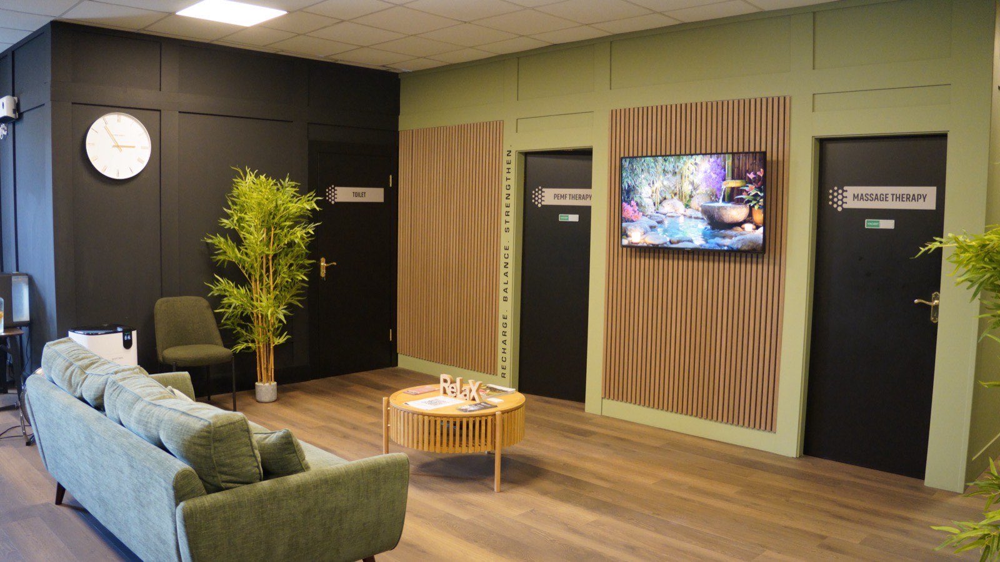

Therapy
Hands-on bodywork from clinical therapists. Ten treatments, from a straightforward hour on the table to reflexology and lymphatic drainage.
Everything on this page is hands-on work. Three of them are disciplines in their own right and get their own chapter below — massage, lymphatic drainage and reflexology. The rest are variations on the table: a different pressure, a different set of hands-on tools, a different length of hour.
If you do not know which to book, ring us and say what the last few weeks have been like. Two minutes on the phone is a better use of your money than the wrong hour, and we will say so if the answer is one of the other therapies instead.

The full menu
Who does the work
Every treatment here is carried out by a clinical therapist.
They will tell you what a session involves before anything starts, what you will be asked to take off and what stays covered, and they will tell you when the honest answer is that a different treatment suits you better. The oncology-adapted work is done by a therapist trained specifically for it. If you would rather ask about any of that before you arrive than at the desk, ring 083 867 2844.
A therapeutic massage is an hour of somebody working directly into muscle: slow, firm pressure through the layers that have tightened, at a depth the two of you agree before anything starts. You lie on a table under towels, only the area being worked is uncovered, and the pressure changes on a word.
The account of why it helps is straightforward enough. Pressure and movement across muscle can encourage local blood flow, and blood flow is what carries oxygen and nutrients into tissue and takes the by-products of hard work back out. Sustained, unhurried contact is also understood to move the nervous system towards its resting state — the side of it that governs rest and repair rather than alertness. Both of those are a “can” rather than a “will”, and we would rather say so out loud than leave the verbs to carry it: it is what the work is understood to encourage over a run of treatments, not a forecast of what one hour will do for you.
What people report is less complicated than any of that. They get off the table looser through the shoulders and the lower back, and they sleep well that night. Whether it is worth it to you is a judgement best made after one rather than after a block.
Manual lymphatic drainage looks, from the outside, like almost nothing happening. The pressure is a fraction of a massage's — slow, rhythmic, not much more than the weight of a hand, following particular routes across the skin. Anyone who books it expecting a deep-tissue hour is surprised, so it is worth knowing before you arrive that the lightness is the technique rather than the therapist going easy on you.
The reason for it is anatomical. Your lymphatic system moves fluid around the body alongside the blood, and unlike the circulatory system it has no pump of its own: it depends on movement, on breathing, and on being worked from outside. Those vessels sit just under the skin, which is why heavy pressure is the wrong tool — it presses straight past them. The working account is that light, directional contact can encourage fluid to move along them. That is a “can”, and this page is not going to dress it up as more.
What we will not tell you is what that clears or settles. It is a gentle, unhurried hour that a lot of people find calming, and it is more often booked by somebody who feels heavy than by somebody who feels sore. If you have had surgery, or you are under a consultant's care for anything at all, talk to them and to us before you book. We go ahead with their agreement and not otherwise.
Reflexology is precise thumb and finger work on the feet, done with you lying down and only your shoes and socks off. It is a discipline in its own right rather than a foot massage, it is trained and examined separately, and the therapists who offer it here hold that training.
It works from a principle rather than from a mechanism anyone can show you: that particular points on the feet correspond to the rest of the body, and that working them carefully has an effect beyond the foot. That is the map the discipline is built on, and we would rather set it out as the discipline's own account than present it as something settled. What is not in question is what the hour is like — sustained, precise, unhurried pressure, which is among the more reliable ways there is of getting a nervous system to stand down.
So that is what we will claim for it, and no more. People come off the table calmer than they got on it, and the ones who rebook are usually rebooking the calm. VHI members may be able to claim some of the cost back depending on their plan; there is more on that below.
Worth asking
Ring us and say what has been going on — a heavy training block, a desk and a long commute, a week that will not switch off. We will say which we think fits. If none of them do, or if one of the other therapies is the better answer, we will say that instead.
It depends which one you book. For massage you undress to your underwear and stay under towels throughout, with only the area being worked uncovered. For reflexology it is shoes and socks. For Indian head massage you stay seated and dressed. Whichever it is, the therapist tells you before anything starts rather than after you are in the room.
Deep tissue work can be uncomfortable at the edges, and it should never be more than that. The pressure is set with you at the start and changed the moment you say so. Nobody here is impressed by how much you can take.
There is no schedule to keep. Some people book a treatment when a training block has caught up with them, and some keep a standing hour every second week because it is the only one in the fortnight that is theirs. Start with one and see which of those you turn out to be.
Yes, and plenty of people do. Bodywork sits alongside infrared, hyperbaric oxygen and the HIFEM chair rather than competing with them. Tell us what your week looks like and we will space them sensibly.
No. What we offer is wellness bodywork, for tension, comfort and rest. We do not diagnose medical conditions and we do not claim to resolve them. If you have a diagnosed condition, or you are under anyone's care, follow their advice and tell us before you book so we can say honestly whether this suits you.
Talk to us, and to whoever is looking after your recovery. We will only go ahead with their agreement, and we would far rather wait a fortnight than get that one wrong. Tell us about older surgery too, however long ago it was.
Tell us when you book. Some of these are suitable with adjustments and some are not, and where there is any doubt at all we will ask you to check with your midwife or GP first.
It is massage adapted for people who are in treatment or have been, carried out by a therapist trained for that work: lighter, slower, planned around you, and adjusted for the day rather than the booking. We are not telling you it does anything about your treatment, because that is not ours to say. Tell us where you are up to when you book, speak to your medical team first, and we will go ahead with their agreement.
Irish Life and Laya
Members may be able to claim back for massage therapy, depending on the plan.
VHI
Members may be able to claim back for reflexology, depending on the plan.
Before you book
Contact your provider to confirm what complementary therapy benefit you have. We are happy to help with any questions.
Bodywork is priced per treatment rather than in blocks, so there is nothing to commit to. Where a treatment runs to two lengths, both are listed.
Getting started
If you are not sure which of the ten you want, ring us on 083 867 2844 and say what the last few weeks have been like. We will tell you which we think fits, including when the honest answer is one of the other therapies instead.